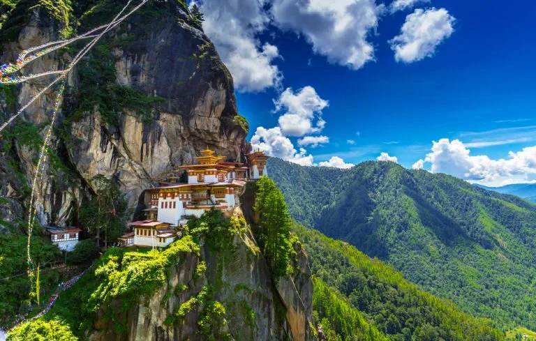

💀Viajes No Regresarás💀
Orientado por:

💀Viajes No Regresarás💀
Orientado por:

El último gran reino del Himalaya es un lugar extraordinario, envuelto en un halo de misterio y magia, donde la cultura budista tradicional acoge con cautela los cambios globales.